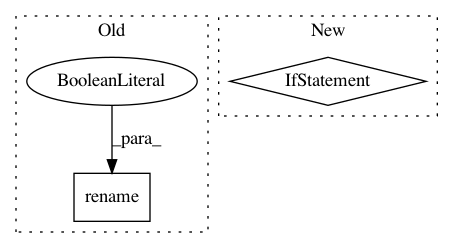

f334dd79dce5dd76927bc3af3bf0174bb9f34040,nilmtk/dataset_converters/ampds/convert_ampds.py,,convert_ampds,#,29
Before Change
df.index = pd.to_datetime(df[TIMESTAMP_COLUMN_NAME], unit="s", utc=True)
df = df.drop(TIMESTAMP_COLUMN_NAME, 1)
df = df.tz_convert(TIMEZONE)
df.rename(columns=lambda x: columnNameMapping[x], inplace=True)
df.columns.set_names(LEVEL_NAMES, inplace=True)
df = df.apply(pd.to_numeric, errors="ignore")
df = df.dropna()
df = df.astype(np.float32)
After Change
df = df.drop(TIMESTAMP_COLUMN_NAME, 1)
df = df.tz_convert(TIMEZONE)
df.columns = pd.MultiIndex.from_tuples(
[columnNameMapping[x] for x in df.columns],
names=LEVEL_NAMES
)
df = df.apply(pd.to_numeric, errors="ignore")
In pattern: SUPERPATTERN
Frequency: 4
Non-data size: 2
Instances
Project Name: nilmtk/nilmtk
Commit Name: f334dd79dce5dd76927bc3af3bf0174bb9f34040
Time: 2019-06-22
Author: 10246101+PMeira@users.noreply.github.com
File Name: nilmtk/dataset_converters/ampds/convert_ampds.py
Class Name:
Method Name: convert_ampds
Project Name: nilmtk/nilmtk
Commit Name: 3e6810fabecf13e815b9d93284ca4ee16819d03d
Time: 2018-06-25
Author: 10246101+PMeira@users.noreply.github.com
File Name: nilmtk/dataset_converters/combed/convert_combed.py
Class Name:
Method Name: convert_combed
Project Name: nilmtk/nilmtk
Commit Name: 59c2829cc4a2ce0aa7b1ad03e5cdae55e8cb032c
Time: 2019-06-23
Author: 10246101+PMeira@users.noreply.github.com
File Name: nilmtk/dataset_converters/iawe/convert_iawe.py
Class Name:
Method Name: convert_iawe
Project Name: nilmtk/nilmtk
Commit Name: ef61bd954f975ee108ffe88482c5ad3207d222fe
Time: 2018-09-08
Author: 10246101+PMeira@users.noreply.github.com
File Name: nilmtk/dataset_converters/eco/convert_eco.py
Class Name:
Method Name: convert_eco